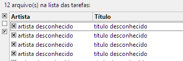
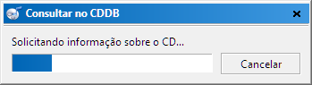
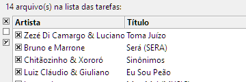
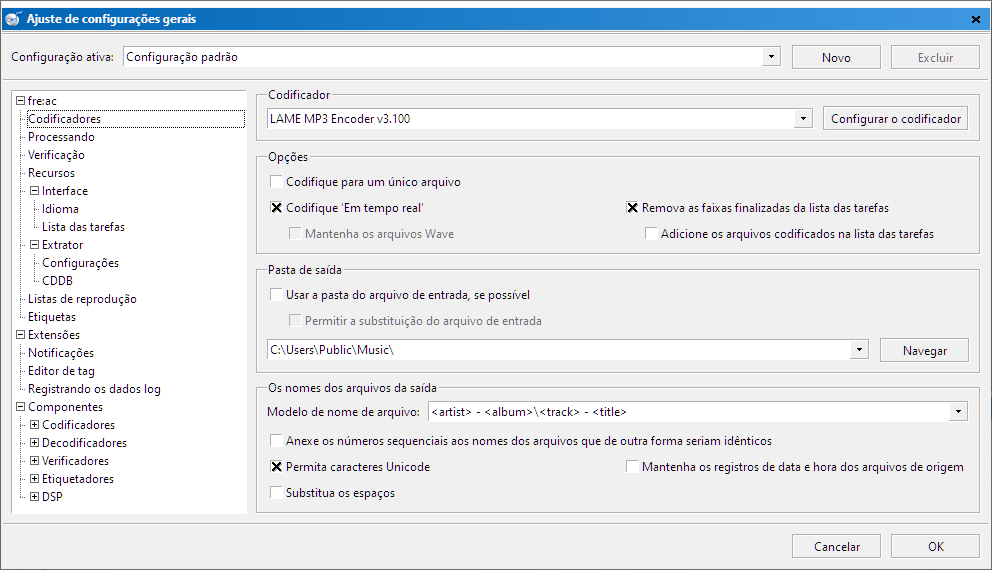
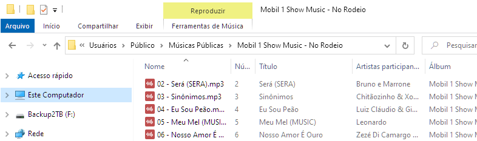
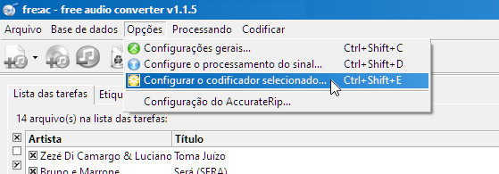
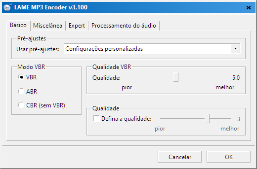
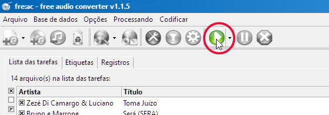
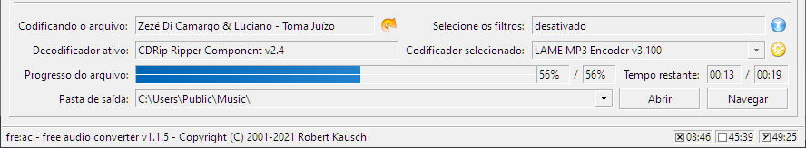

Baixe a versão mais recente de fre:ac no GitHub ou da página oficial do fre:ac. Instale o programa e o inicie. Insira um CD de áudio na unidade de CD/DVD do seu computador. As faixas do CD geralmente aparecem automaticamente na janela principal do fre:ac. Caso contrário, clique no botão "Adicionar o conteúdo de CD de áudio à lista de tarefas".
É possível usar o freedb cd para não ter que inserir os nomes das faixas e o nome do álbum manualmente. Para isso, clique no botão "Consultar a base de dados CDDB". Assim teremos uma tela parecida com esta:
Assim todos os nomes das faixas e do álbum serão preenchidos automaticamente:
Agora precisamos definir as configurações gerais do programa. Clique em "Opções" e selecione "Configurações gerais". Isso fará com que a seguinte caixa de diálogo seja exibida:
Nela podemos definir as configurações do codificador. As predefinições do fre:ac seleciona o codificador LAME MP3 automaticamente. É ele que usaremos neste tutorial. Confira se a opção "Codifique em tempo real" está selecionado. Insira também o caminho completo para onde os seus arquivos MP3 serão salvos. Eu usei este diretório para salvar as minhas músicas.
No campo "Modelo de nome de arquivo" é onde você pode definir como os nomes dos arquivos serão salvos. Neste exemplo o nome do álbum será definido como o nome da pasta, o artista aparece no cabeçalho do diretórios e os nomes dos arquivos serão salvos com o número da faixa seguido do título da música. A predefinição para o nome do arquivo é "<artist> - <album>\<track> - <title>". Assim os nomes dos arquivos ficarão assim:
Para os usuários mais avançados, há diversas outras configurações que podem ser alteradas para atender todas as suas necessidades.
Agora vamos configurar o LAME para criar os MP3 com qualidade. No menu vá em "Opções" e selecione "Configurar o codificador".
A tela será igual ao da imagem abaixo.
O fre:ac já vem com diferentes configurações para o LAME. Elas servem para que você possa escolher diferentes pré-ajustes para o codificador e assim alterar a qualidade final da conversão. Quanto mais alto for o seu pré-ajuste ("Extremo" por exemplo), mais espaço o seu MP3 vai ocupar por causa da compressão menor e assim mais qualidade o seu MP3 terá. Eu prefiro personalizar as minhas configurações para otimizar a qualidade final dos meus arquivos. É possível visualizar estas configurações aqui. Neste exemplo, deixaremos com a predefinição em Padrão. Clique em Ok para aplicar as configurações, agora selecione quais as faixas que deseja extrair e converter.
Já na tela principal, podemos selecionar quais as faixas nós queremos extrair e converter. Do lado esquerde de cada trilha, há uma pequena caixa de seleção. Os que têm um × marcam as faixas que serão extraídas e convertidas. No exemplo vamos extrair todas as faixas, porém você pode selecionar quais as faixas deseja converter.
Clique no botão da imagem para iniciar o processo de conversão.
Na parte debaixo da janela aparece uma barra indicando todo o processo:
À medida que cada música for convertida os títulos das músicas vão sendo eliminadas automaticamente da sua lista de tarefas (onde aparece todos os títulos).
Parabéns! Você extraiu e converteu o seu primeiro CD usando o fre:ac!